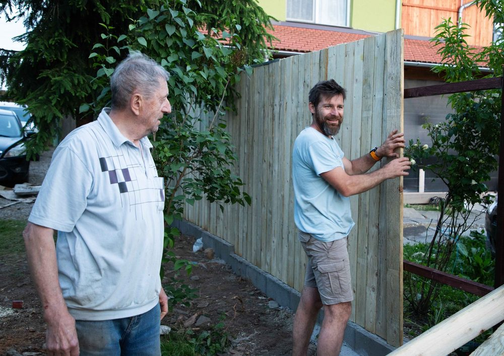

In This Guide
- A good neighbor fence looks finished from both sides, so you and the people next door see the same clean face.
- Talk to your neighbor before you draw a plan, and settle the height, style, cost split, and upkeep in writing.
- Confirm the property line and check parish, city, and HOA rules before any digging or ordering.
- The build runs in a set order: posts, rails, boards, then a protective finish that suits Louisiana weather.
A good neighbor fence is built so both sides get a finished, attractive face. Nobody ends up staring at bare rails and nail heads. It is a small design choice with a big effect on how a fence sits between two households.
The team at Big Easy Fence walks through the whole project here: how to talk to your neighbor, how to plan and choose materials for a wood fence, what the build looks like from post to finish, and how to keep the fence in shape so it stays a good neighbor for years.
Start With the Conversation
The best fence projects begin with a chat over the property line, not a permit or a purchase order. A short, friendly talk saves you from a lot of trouble later.
- Share your plan early. Tell your neighbor what you have in mind, when work might start, and how long it could take.
- Ask what they want. They may care about height, privacy, or how the fence looks from their patio. Listening now can improve the design.
- Talk about cost. If the fence benefits both properties, you may agree to split the price. Put whatever you decide in writing.
- Agree on upkeep. Decide who handles staining, repairs, and cleanup so no one is guessing later.

Plan the Layout and the Rules
Once you and your neighbor agree in principle, pin down the facts. This step protects both of you.
Know Where the Line Is
Never guess at a boundary. If you are unsure, check your survey or plat, and consider having the line marked before work begins. A fence built even a few inches onto the wrong lot can turn into a real dispute.
Check the Rules
Ask your parish or city whether a permit is needed, and read any homeowner association rules on fence height, style, and setback. Height limits often differ between front and back yards, so confirm which one applies to you.
Call Before You Dig
Buried gas, water, and electric lines run through many yards. Use the free utility locate service in your area before any post hole is dug, and let the crew know where the marks are.
Design Choices That Look Good on Both Sides
A few fence styles are built for exactly this job. The idea is to hide the rails and framing on one side, or to alternate the boards so neither side looks like the back.
| Style | How It Looks From Both Sides | Privacy | Airflow |
|---|---|---|---|
| Shadowbox | Boards alternate on each side of the rails, so both faces look finished | Good | Good |
| Board-on-Board | Overlapping boards make a solid, even face | High | Low |
| Lattice-Topped | A solid base with an open lattice cap softens the top line | High to moderate | Moderate |
| Picket | Open boards look the same from either side | Low | High |
Shadowbox is a favorite in humid climates because the gaps let air move through, which helps the wood dry out. In a windy area, that openness also reduces the force on the posts.
Choosing Materials for Louisiana Weather
Wood is the traditional good neighbor choice. Cedar and cypress resist rot and insects better than many other woods, which matters in a damp climate. Pressure-treated pine is a common budget option, and it holds up well when it is sealed.
Whatever wood you pick, use rust-resistant screws or nails, and set posts in concrete. Vinyl and composite are low-maintenance alternatives if neither of you wants to deal with staining. Whichever one you choose, agree on it before ordering.
How the Build Goes From Start to Finish
The steps below give you a picture of what a crew does. The work needs the right tools and some care around utilities, so most owners hand it to a contractor.
- Set the line. String lines mark a straight run, and post locations are measured out along it.
- Dig and set the posts. Holes go deep enough for stability, and each post is set in concrete and checked for plumb while the concrete is still wet.
- Attach the rails. Horizontal rails go between the posts to carry the boards, and they should be level and firmly fastened.
- Hang the boards. Boards go up evenly spaced and aligned, with each one fastened securely so nothing shifts as the wood dries.
- Finish the wood. Rough spots get smoothed, and the whole fence gets a sealer or stain. Our guide on how to seal and weatherproof a wooden fence covers that step in detail.
Keep the Peace for the Long Term
A fence that starts out looking good on both sides can drift out of shape. Loose boards, leaning posts, and peeling finish bother a neighbor as much as they bother you.
- Inspect twice a year. Look for loose boards, rot at the base, and posts that have started to lean.
- Fix small problems fast. A single board replaced now costs far less than a section replaced later.
- Keep plants trimmed. Vines and shrubs that press against the wood hold moisture and invite rot.
- Share updates. If a repair is coming, let your neighbor know before the crew arrives.
A lattice top, a few plantings along the base, or a slightly lower height in the front yard can give you privacy without making the fence feel like a wall.
When to Bring in a Professional
A contractor earns the cost on straight lines, level rails, deep posts, and the paperwork side of the job. A pro can also walk the site with both households, so the design and the layout are settled in one conversation.
If you are planning a shared fence, our fence repair team can also help keep an existing boundary in good shape while you decide whether to replace it.
Planning a Fence With Your Neighbor?
Tell us about your lot and what your neighbor wants, and we can go over designs, layout, and materials with you.